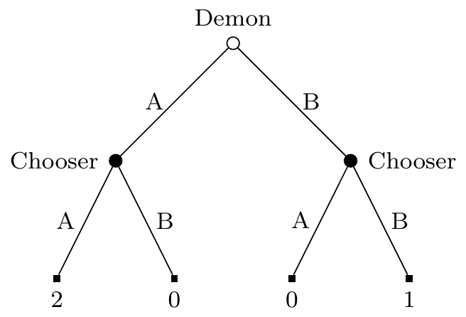
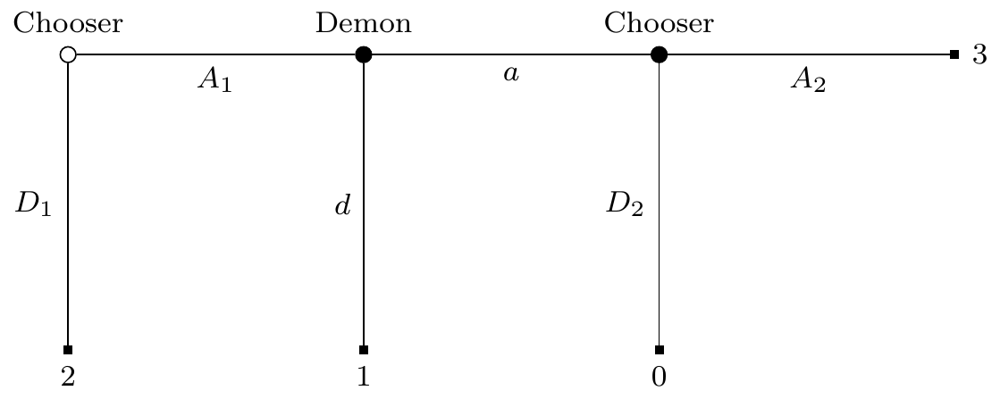
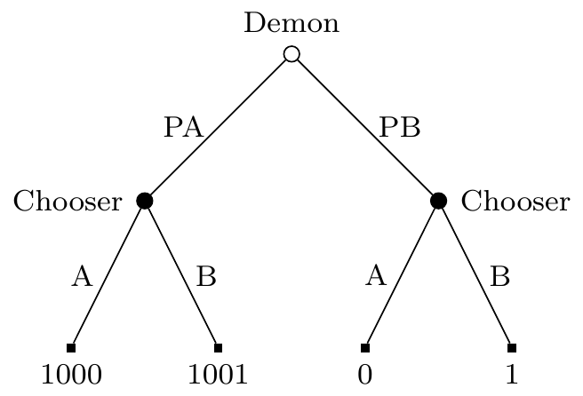
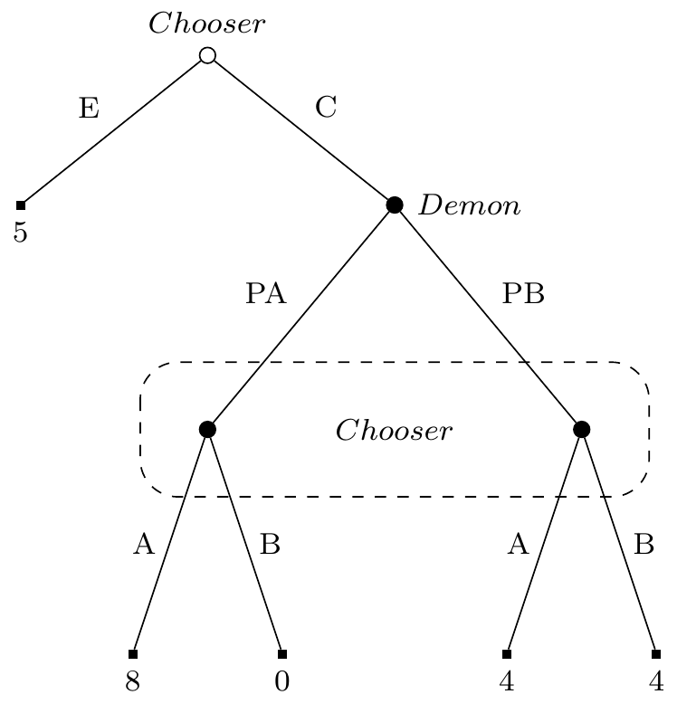

7 Dual Mandate
7.1 Introduction
This chapter marks a turning point in the book. From here on, a large amount of the time will be spent discussion situations involving dynamic choice. A central argument for GDT is that only it, or something like it, is compatible with plausible principles of dynamic choice.
The aim of this chapter is to defend what I call the Dual Mandate. In dynamic choice situations, rational Chooser will act in such a way that (a) each individual choice they make is sensible, and (b) the choices they make collectively are sensible. And I’ll defend the claim that (a) and (b) are distinct constraints on rational Chooser. This position is, I think, fairly orthodox in game theory. But it is not, I believe, widely held in philosophical decision theory. The caveat there is because a lot of decision theorists do not discuss dynamic choice, so I can’t always tell what their view is. But of the ones that do, most either reject (a), saying that only collective choices are to be evaluated, reject (b), saying that only individual choices are to be evaluated, or deny that these are distinct constraints. The middle option is by far the most common, but you can easily enough find examples of all three. It’s somewhat harder to find examples of people in the philosophy literature endorsing the Dual Mandate.
For related reasons, this chapter will be longer and more technical than what came before. Even saying what the Dual Mandate says involves some setup. So this section will largely be about defining the key terms.
7.1.1 Decision Trees
I’ll call the dynamic choice situations I’ll be interested in decision trees. To define them, it helps to start with an orthodox definition of a game tree.
“A finite extensive form (or frame) with perfect recall consists of the following items.
- A finite rooted directed tree.1
- A set of players I = {1,…,n} and a function that assigns one player to every decision node.
- A set of actions A and a function that assigns one action to every directed edge, satisfying the restriction that no two edges out of the same node are assigned the same action.
- A set of outcomes O and a function that assigns an outcome to every terminal node.
- For every player i \(\in\) I, a partition \(\mathfrak{D}_i\) of the set Di of decision nodes assigned to player i (thus \(\mathfrak{D}_i\) is a collection of mutually disjoint subsets of Di whose union is equal to Di). Each element of \(\mathfrak{D}_i\) is called an information set of player i.”(Bonanno, 2018: 119)
1 This is defined earlier, on page 75, but the details aren’t important to what we’re doing.
The quote continues with some restrictions on \(\mathfrak{D}_i\), but I want to pause first to say what this is supposed to represent, and then it is easy to say informally what the constraints are. This partition is an epistemic accessibility relation. If two nodes are in the same cell of the partition, then when the player is in one of them, for all they know, they are in the other. The strongest thing they know, when they are at a particular node, is that they are somewhere in that cell of the partition.
Implicitly, the assumption here is that the right accessibility relation for epistemic logic is an equivalence relation. That’s absurd in full generality. But I think in this context it’s a harmless enough idealisation. That is, it’s harmless enough if we remember that an idealisation here is a simplification, and not something that we think is desirable, or in any way something to aim for.
There are two standard restrictions on \(\mathfrak{D}_i\). First, players know what moves are possible, so for any two nodes in a cell of \(\mathfrak{D}_i\), the same actions are possible. Second, players remember their actions, so for any two nodes in a cell of \(\mathfrak{D}_i\), the paths to those nodes only differ with respect to moves made by other players.
We’re also going to make three more assumptions that are I think implicit in the standard formulation, but not always made explicit.2 Say a ‘play’ is a particular path through the tree that happens in real time. The assumptions concern what happens in all plays of a tree thus understood.
2 Bonanno does make all these explicit at various times, but doesn’t list them in one spot for neat quoting.
First, each player is motivated to get the best outcome possible. If we interpret the outcomes as preferences of the player at the end of the play, and assume that players are motivated by their current preferences, this is in effect an assumption that preferences do not change over the course of the play.
Second, the tree is common knowledge at the start of the play. A player will not acquire new capacities over the game, or learn that they had capacities they didn’t realise. They will not acquire any capacity to make distinctions between possibilities that they did not have at the start of the play. So, for instance, there can’t be a point in the tree where a player meets a new individual, and acquires by acquaintance the ability to have singular thoughts about that person, and distinguish that person from descriptive duplicates.3
3 Following Stalnaker (2008), I think this constraint means that we can’t represent the Sleeping Beauty problem (Elga (2000)) as a tree, since in that problem Beauty gains the capacity to have singular thoughts about a time, the ‘now’ when she awakes, that she did not previously have.
Third, it is common knowledge among all the time-slices of a player that all of the player’s time-slices are rational. At this stage, it’s important that ‘rational’ be left as something of a placeholder, or, perhaps better, a variable. In some sense the aim of the theorising around here is to solve for the value of ‘rational’ given some intuitive data about rational play. But whatever rationality is, we assume the player always has it, they always know they will always have it, they always know that they always know they will always have it, and so on.
7.1.2 Strategies
A strategy for player i is a function from the members of \(\mathfrak{D}_i\) to probability distributions over actions. That is, the strategy says which action, or mixed action, a player will do at each information set that they could reach consistent with the rules of the game.
It will become important that these are extremely fine-grained. A strategy describes what a player will do at nodes that are ruled out by other choices the player makes. Consider a game that consists of two rounds of some simple two-player, two-choice game, like Prisoners’ Dilemma, with the results of the first round revealed before the second round is played. Each player has 32 strategies. (So there are 1024 strategy pairs.) The tree for the game has five information sets where each player might move; the first-round game, then, since there are four ways the first game could go, four more possibilities for what they might know when the second-round game is played. Since there are 25, i.e., 32, ways to make binary choices over five possible choices, there are 32 strategies.4
4 Some of the results of the next few chapters came from work I started investigating what happened in two-round decision problems like that. None of that work appears here, because for every result I found, I eventually found an illustration with many fewer strategies. If you’re grateful you don’t have to look at 32-by-32 strategy tables, you can’t imagine how grateful I am to not be writing them.
I’m going to assume a kind of realism about strategies. Players actually have dispositions about what they will do at nodes that aren’t reached, and even at nodes that couldn’t be reached given their prior dispositions. These dispositions are at least real enough to play the following two roles: they can be the conditions that conditional probabilities are defined over, and they are subject to evaluation as rational or irrational.
7.1.3 Special Players
Trees in game theory textbooks frequently designate one special player: Nature (Bonanno, 2018: 134ff). Nature is different to human players in two key respects.
Nature does not care about which outcome the game ends with; formally, we describe an outcome by listing the utilities for the players other than Nature.
Nature is not rational. It is usually taken to be common knowledge among the other players that they are rational; but Nature is treated differently. Instead of assuming rationality, we assume common knowledge of the externally provided probability distribution over the possible moves Nature might make at each node.5
5 Though note that does not mean all players know the probability of each move at any time Nature moves. It could be that while the game is going, a player does not know precisely which node they are at, so they do not know what probability distribution Nature is using. This is common in card games. If I don’t know what’s in your hand, I don’t know what cards are left, so I don’t know whether the probability that Nature is about to give a player the Jack of Hearts is, say, 0.025, or 0.
The key formal move in this book is to introduce new players, demons, which behave a bit like rational players, and a bit like Nature.
A decision tree, as I’ll understand it in this book, is like a game tree, but with more players that are distinctive in the way Nature is. There is only one player stipulated to be rational: Chooser. (They will be player 1 in what follows, unless stated otherwise.) At most one player is Nature, in the game-theoretic sense. The other players are all demons. If a demon moves at a node, then Chooser knows not the unconditional probability of that demon’s possible actions, but the conditional probability of the demon’s actions given their strategy choice. In more familiar terms, the demon predicts their strategy with a certain probability of accuracy, and has dispositions about what to do given each prediction.
While these demons are a lot like the demons that have been central to decision theory ever since the introduction of Newcomb’s Problem, there are two things I’m doing differently here that I want to note up front. First, there may be more than one demon. In the examples to follow, there will occasionally be four players: Chooser, two demons, and Nature. Second, the conditional probabilities are conditional on strategies, not just choices. This will matter in two stage games; to make the second stage game be just like the familiar games in decision theory (like Newcomb’s Problem), it will be important that Demon’s dispositions are sensitive to Chooser’s dispositions about the second game. And this is important even in cases (of which there will be a few below) where Chooser can choose whether to play that second-round game.
7.1.4 Extensive Form and Strategic Form
Given a decision tree, we can generate a related game where each player has precisely one choice: what strategy they will play. This sometimes called the strategic form of the game, and sometimes called the normal form. I’ll primarily use the earlier, more evocative, term.6 The contrast, the decision tree where the players act over time, is called the extensive form of the game. I said the strategic form of a game is to its extensive form, but you might wonder how closely related it is. Is it, in some sense, the same game?
6 Whenever I come back to this material after time away, I can never remember what ‘normal form’ means. But it’s easy to remember that extensive form is extended in time, and strategic form is about strategy choice.
One way to make progress on this question is to ask whether the strategic form and extensive form are equivalent, in the sense that the following thesis is true.
- Strategic Form - Extensive Form Equivalence
- Some moves in an extensive form of a decision tree are rational (both individually and collectively) iff they are part of some strategy that can be rationally played in the corresponding strategic form decision.
Most game theorists deny this equivalence.7 The examples used to motivate this are fairly simple. In Figure 7.1, Demon moves first, and Chooser moves second. Chooser can play A or B, Demon can play PA or PB. Demon wants these predictions to be correct. Chooser gets a reward iff Demon’s prediction is correct. Chooser gets a higher reward if they both choose A than if they both choose B. Demon is arbitrarily good at predicting Chooser’s strategy, and this is common knowledge to both players. Demon will do whatever makes it most likely that their prediction is correct, or flip a coin if their choice does not affect the probability that they will make a correct prediction.
7 The next few paragraphs are based on the game theoretic notion of non-credible threats (Bonanno, 2018: 86ff).
Here is how to understand graphs like Figure 7.1. The circles are nodes where one or other player (Chooser, Demon, or Nature) has to make a choice. The open circle, here at the top of the tree, is the first such choice. Where possible, I’ll draw trees where later choices are lower on the page than earlier choices, but this isn’t always possible. What is always the case is that the open circle is the opening move. The small square nodes are terminal nodes; at that point the game ends, and Chooser collects their payout.
The strategic form of this game is given in Table 7.1. Demon clearly has two strategies, PA and PB. But Chooser has four; since they have to plan for a binary choice in two possibilities. I’ve written LXRY for the strategy of doing X on the left hand part of the tree, i.e., if Demon predicts A, and doing Y on the right hand part of the tree, i.e., if Demon predicts B.
| PA | PB | |
|---|---|---|
| LARA | 2 | 0 |
| LARB | 2 | 1 |
| LBRA | 0 | 0 |
| LBRB | 0 | 1 |
The argument against Strategic Form - Extensive Form Equivalence is now fairly simple. In Figure 7.1, there is only one rational choice: LARB. Whatever happens, Chooser has an option between getting something and getting nothing, and it’s better to get something than nothing. But in Table 7.1, there are many rational choices. The pair of Chooser playing LARA and Demon playing PA is a Nash equilibrium. If one’s theory of rational choice for strategic games is that any Nash equilibrium is rational, then playing LARA in Table 7.1 is rational. Hence different strategies are rational in Figure 7.1 and Table 7.1, so Equivalence fails.
There are a bunch of ways one could reply to this. One could argue that in fact LARA is rational in Figure 7.1. We’ll see a theory that says that in Section 7.4. One could argue that LARB is the only rational play in Table 7.1. This possibility complicates the dialectic around here, because while GDT rejects Equivalence, it also rejects this example. It agrees that LARB is the only rational choice in Table 7.1, because it weakly dominates LARA.8 The examples that motivate rejecting Equivalence within GDT are more complicated, and I’ll come back to them in Section 7.3.
8 I’ll discuss this more at length in Chapter 11.
Note that to save Equivalence, it’s not enough to merely deny that there are multiple permissible moves in Table 7.1. Evidential Decision Theory says that there is only one rational move in that game, and it’s LARA. That has an expected return of 2, while LARB has an expected return of 1.5. But EDT agrees that in Figure 7.1, the only rational strategy is LARB. So EDT agrees with the game theory textbooks that this is a counterexample to Equivalence, even though it disagrees about why it is a counterexample.
7.2 Four Options
7.2.1 Introducing the Contestants
I’ve already briefly alluded to these, but it’s time to set out in more detail the four approaches to dynamic choice that I’ll consider at greater length over this chapter.
Purely Strategic approaches say that Chooser uses decision theory to choose a strategy, and then implements that strategy at each node. This is sometimes known in philosophy as the resolute approach to decision theory.9 In a finite game, there will be finitely many strategies. This finite number may be very large, but it can be calculated. And similarly there are finitely many strategies for each of the non-human players, and Chooser can work out the conditional probability for each such strategy given their choice of strategy. So we have a very large, but finite, game, and most decision theories on the market in philosophy will have something to say about what Chooser should do in this large game. All that’s then left to do is to carry the strategy out.
9 That particular term, ‘resolute’, is associated with a view that Edward McClennen developed to deal with cases of foreseeable changes of preference (McClennen, 1990). As already indicated, I’m just looking at games where preferences do not change over the game.
Purely Consequentialist approaches say that Chooser will consider every decision at a node on its own merits, solely thinking about the consequences of that particular decision. This is sometimes called the ‘sophisticated’ approach to dynamic choice in philosophical discussions, but I prefer calling it the Purely Consequentialist approach. I don’t like the implicit endorsement in calling something sophisticated, and given that I’ve already called the rival approach strategic, having two names starting with the same letter is bad. The name I’m using echoes the influential understanding of consequentialism in Hammond (1988). And it gets at what is important about the view; that it rules out looking back.
If Chooser is Purely Consequentialist and they face a series of choices, they will work backwards.10 They will work out what they will do at terminal stages of the game, i.e., at stages where they will have no more decisions whatever they do. When they are making a decision at a non-terminal stage, they will treat their own future decisions as something to be predicted, not planned for. So they will have a probability distribution over the possible choices, and act as if Nature is (randomly) selecting which choice. Now we’ve stipulated that Chooser knows they will be rational in future stages, so in cases where there is only one rational choice, Chooser will assign probability 1 to them making that choice, and 0 to the alternatives. But in the cases where there are multiple options that are rationally permissible, this probability assignment might be more interesting, and I’ll have more to say in Section 7.5 about the effects of this.
10 See the discussion of backward induction on pages 80ff of Bonanno (2018).
11 This is just about the only place in the book where I’ll rely on a disanalogy between decision theory and game theory.
Equivalence approaches say that Chooser does not have to adopt one or other of these approaches, because once we have the right theory of choice in one-shot games, it will turn out that the two approaches issue in the same verdicts. That is, it will turn out that Strategic Form - Normal Form Equivalence is true. Robert Stalnaker (1999) defends this view in game theory. I’ll argue that the differences between demonic decisions problems and games are just big enough that his defence can’t be adopted to the puzzles I’m looking at.11
Finally, the Dual Mandate approach says that both of the first two approaches were partly correct. Both of them correctly state necessary conditions for rational action. Where they go wrong is the ‘pure’ part, i.e., by saying that these are sufficient conditions for rational action. And that’s what GDT says, and what I’m going to defend.
7.2.2 Picturing the Views
Chooser has to act now, and which action is best depends in part on what they’ll do tomorrow? How should they think of tomorrow’s action?
Not as something they can control; they are a free and rational agent, who can’t simply be bound.
Not as something like the weather that they can merely predict; they don’t see themselves as simply a thing to be predicted.
Quote Stalnaker at length, can’t remember which paper.
Agree - we need something in between.
Strategic views as Strangelove; I bind myself into a position, the position that I would most like to be bound into.
Consequentialist views as Zaphod; future me is just this guy.
Neither is good.
7.2.3 Binding
Is it part of our theory of rationality that people can bind themselves?
Quote Spencer on this.
Not a great argument; even if we can’t bind, maybe ideal people can.
But it seems, and this is a judgment call, that we don’t get any extra explanatory power from doing that. Maybe we do, but most people will give up on plans that they are sure have failed, if the stakes are high enough.
GDT view: people can bind themselves to plans that make sense. If asked now whether I want to bet on heads or tails in an hour, I can bind myself to heads. I can form an intention, in the Bratman-Holton sense, to bet on heads, and simply carry it out. What was permissible, betting on tails, becomes impermissible. That seems to be possible, and add predictive weight.
In normal theories, this is just a weird edge case. Who cares? But for GDT, it’s the main case, since there are lots of times there are multiple permissible options.
7.3 Against Equivalence
I’ll start with arguing against Equivalence. This is the view that we don’t have to choose between Strategic and Consequentialist approaches to dynamic choice, because once we get the details of each theory right, we’ll see that they are equivalent.
Earlier I mentioned that this is usually rejected in game theory textbooks on the basis of examples like Figure 7.1 and Table 7.1. The strategic form of that game has a Nash equilibrium that seems obviously bad to play in the extensive form of the game.
This is a bad argument against equivalence because it’s easy to fix the theory of strategic choice to avoid the problem. If we say that weakly dominated strategies are not choice-worthy, then the strategies that can be rationally chosen in Table 7.1 are exactly the strategies that can be rationally played in Figure 7.1.
But this only shows that this example is not a counterexample to Equivalence. It could be that there are other cases that are counterexamples. Figure 7.2 is the game tree (in the sense described in Section 7.1.1) for one such example.

In Figure 7.2 are three stages, though the game might end at any stage. Chooser is the mover at stage 1 and, if the game gets that far, stage 3. Demon is the mover at stage 2, again if the game gets that far. At stage 1 and 2, if the mover moves down, the game ends. After stage 3, the game ends either way. Chooser’s payouts are given on the tree. Demon’s disposition is to do whatever they predict Chooser will do at stage 3, and they are arbitrarily good at predicting Chooser’s strategy.12
12 This problem is very closely modelled on a game described by Stalnaker (1998: 47). But note that how I’ve described Demon is different to how Stalnaker describes ‘Bob’, the player who moves at stage 2 in his version of the game. In his version of the game, the player who moves first just knows that the player who moves second is rational, and the function they are trying to maximise. In my version of the game, the player who moves first also knows how the player who moves second will react if they are indifferent between their options. That’s why I get what appears to be a different analysis to Stalnaker; we’re not disagreeing here I think, just analysing different games.
13 I’m assuming here that Chooser knows that they will be rational in the future, and this knowledge persists no matter what earlier choices they make. This is a substantial idealisation, but makes sense given the other idealisations that were described in Chapter 2.
In this dynamic game, the only sensible thing for Chooser to do at stage 1 is to play A1. That’s because they know that if they get to stage 3, they will play A2, getting 3, rather than D2, getting 0.13 So they should believe that Demon will predict that they will play A2, and hence will play a. So they should believe at stage 1 that playing A1 will get 3, while playing D1 will get 2, so they should play A1 at stage 1.
None of that should be too surprising; it’s the standard backward induction solution of the game.14 But now consider what happens in the strategic form of the game. Chooser has four strategies: A1 or D1, crossed with A2 or D2. Let’s simply give these strategies names, as follows.
14 Though I’ve been a bit more careful here about just what assumptions each player can make about the other at each stage than is usual.
| Strategy | Move 1 | Move 2 |
|---|---|---|
| S1 | D1 | D2 |
| S2 | D1 | A2 |
| S3 | A1 | D2 |
| S4 | A1 | A2 |
Then Demon has two moves as well, which I’ll call PO and PE. PO means that Demon predicts that Chooser will play an odd numbered strategy, i.e., S1 or S3. That is, Demon predicts that Chooser will play (or be disposed to play) D2. So PO is equivalent to Demon playing (or being disposed to play) d. PE means that Demon predicts that Chooser will play an even numbered strategy, i.e., S2 or S4. That is, Demon predicts that Chooser will play (or be disposed to play) A2. So PO is equivalent to Demon playing (or being disposed to play) a. Given that, we can describe the strategic form of the decision problem. That is, we can set out the strategies for Chooser and Demon, and say what payout Chooser gets for each possible pair of choices.
| PO | PE | |
|---|---|---|
| S1 | 2 | 2 |
| S2 | 2 | 2 |
| S3 | 0 | 1 |
| S4 | 3 | 1 |
If Chooser was making a one-off choice in Table 7.3, it would be rational, according to GDT, to choose S2. That is ratifiable and not weakly dominated. It wouldn’t be rational to choose S1, because given S1 it would be better to choose S4. But given S2 is chosen, it is optimal, since once S2 is chosen, Chooser should believe that Demon is playing PE. So in this one-shot game, where one just chooses a strategy, it is rational (according to GDT) to play S2.
That’s my argument against Equivalence. In Table 7.3 it is rational to choose S2. But in Figure 7.2 it is not rational to play that strategy, i.e., to play D1, because the backward induction argument for playing A1 is sound. So the strategic and extensive forms of the game are not equivalent.
I could try to turn this into an argument against Purely Strategic approaches to decision theory as well, using the following reasoning.
- In Table 7.3, it is rational to play S2.
- In Figure 7.2, it is not rational to play S2.
- If Purely Strategic approaches to decision theory are correct, then the same choices are rational in Table 7.3 and Figure 7.2.
- Therefore, Purely Strategic approaches are incorrect.
But this argument would be blatantly question-begging. The argument for premise 2 relies on backward induction reasoning, and people who endorse Purely Strategic reasoning do so because they reject backward induction reasoning. So it wouldn’t be at all convincing. (Probably many people who endorse Purely Strategic approaches would reject premise 1 as well.) So in Section 7.4 I’ll offer some arguments against Purely Strategic approaches that are not so obviously question-begging.
7.4 Against Purely Strategic Approaches
From now on I’ll assume that rival theories are rejecting Equivalence, and rejecting Dual Mandate. So in this section I’ll focus on theories that say the right thing to do is to select a rational strategy, and then carry it out. And I take it to be part of this theory that sometimes this means making choices that do not make sense, by the theory’s own lights, if they were ‘one-off’ choices. If there are no such cases, the theory is either a version of Equivalence, or of the Dual Mandate.
For this reason, I won’t spend any time on versions of Causal Decision Theory that are Purely Strategic. Such theories would be unmotivated. Causal Decision Theorists think that in Newcomb’s Problem, one reason that it doesn’t make sense to choose the dominated option is that if one knew what Demon had predicted, one would definitely take the dominating option. That’s to say, they think the fact that one knows that some choice would be rational given further information is a reason to make the choice. And that’s in tension with the idea that it’s rational to play a strategy that will not make sense when it’s being carried out, just because at the start of the tree it looks like the best strategy.
In practice, defenders of Purely Strategic views do not normally assume CDT. There are, instead, two main motivations for Purely Strategic views. One of them won’t matter to this project. It is the idea that in non-ideal settings, particularly when preferences might change, or one might be irrational later, it might be better to simply choose a strategy and stick to it. Since I’m only talking about ideal theory here, I’ll set that aside. The other motivation is more interesting. It is that the reasons behind Evidential Decision Theory (EDT) are in fact better reasons to choose Strategic Evidential Decision Theory (SEDT).
SEDT is a fairly simple theory. It has two rules.
- In dynamic choices, one should choose an optimal strategy at the start of the tree, and carry that strategy out the rest of the way.
- The right way to evaluate strategies is to use Evidential Decision Theory.
SEDT is very similar to the Functional Decision Theory defended by Levinstein & Soares (2020). My excuses for using a new name are that (a) this name is a little more descriptive, and (b) I’m not quite sure that the theories are the same. I think they say the same things about every case I’ll discuss in this section, but Levinstein and Soares don’t discuss cases of demons who make imperfect predictions, so I’m guessing a little bit about what they’d say. And possibly my understanding of what a single decision problem is doesn’t exactly match theirs. So rather than do more exegesis, I’ll focus on SEDT, which is in any case an interesting theory.
One way to motivate SEDT is by thinking about a version of Newcomb’s Problem where Demon’s predictions are revealed to Chooser. The game tree for this variant on Newcomb’s Problem is in Figure 7.3.

In Figure 7.3, regular EDT says to choose B. After all, no matter which node one is at, the best thing to do given that one is there is to take the extra 1 on offer. But it’s surprisingly hard to come up with reasons to choose A in the original problem that do not extend to this problem. The main reason which is offered, that people who choose A end up richer, applies equally well here. And the main objection that opponents make, that choosing A is strange because one knows that one would choose B once one discovered what prediction was made, does not have any bite if one would follow SEDT and not in fact choose B were the prediction revealed.
It’s a little amusing to imagine a proponent of regular EDT playing a version of Figure 7.3. Presumably they would do whatever they could to not learn what the prediction was until they could make a choice. After all, by their own lights, learning what the prediction was would cost them, in expectation, 999. So depending on how this information will be revealed, they will close their eyes, sing “La la la I can’t hear you” to block out noises, maybe hold their breath if the information will be revealed by distinctive smells, and so on. This doesn’t seem like an image of a practically rational Chooser, and SEDT avoids all these problems.
That’s not to say that SEDT is entirely without its own intuitive costs, even in simple cases like Figure 7.3. The person carrying out SEDT will give the following speech. “I am not here to be a hero; I’m not following some philosophical theory just because it’s cool. My job is making money. And, now that the prediction is revealed, I can see that I’ll make more money choosing B. But I’m taking A.” Again, this doesn’t sound great. But, they argue, it does in fact lead to getting more money, on average, so maybe there is something to it. And SEDT does not agree with EDT in the cases I described in Section 4.3, so I can’t say that they are relying, as EDT relies, on too narrow a diet of cases.
Still, SEDT is not defensible in all somewhat realistic situations. The example I’ll use to demonstrate this is rather more violent than the other examples in this book. But it needs to be rather violent in order to rule out the possibility of there being strategic or reputational considerations that are being left out.
Chooser is the Prime Minister of a small country, and they are threatened by a large nearby country, Neighbour. Unfortunately, Neighbour is thinking of carpet bombing Chooser’s capital, in retaliation for some perceived slight during trade negotiations. Chooser has no air defences to stop the bombing, and no allies who will rally to help.
Fortunately, Chooser has a mighty weapon, a Doomsday device, that could destroy Neighbour. Chooser has obviously threatened to use this, but Neighbour suspects it is a bluff. This is for a good reason; the doomsday device would also destroy Chooser’s own country. Neighbour is known to employ Demon who is at least 99% accurate in predicting what military plans Chooser will take.15 In practice, all Demon has to do is predict So Chooser can do Nothing (N), or use the Doomsday device (D), should neighbour attack. Chooser would obviously prefer no attack, and would certainly not use the device preemptively. And Neighbour will attack iff Demon predicts that Chooser will do Nothing. Given all that the decision table that Chooser faces is in Table 7.4.
15 It’s very important to this example that Demon is not perfectly accurate. There hasn’t been as much attention as there might have been to what happens to theories like SEDT in the context of good but not perfect Demons.
One might worry that the case is not, as promised, realistic, because states do not in fact have Demons. That’s true, but they do have spies, and analysts, and they are somewhat reliable in making predictions. It seems plausible that they could be reliable enough to get the case to work.
| PN | PD | |
|---|---|---|
| N | -1 | 0 |
| D | -50 | 0 |
In the top left, Neighbour bombs Chooser’s capital, thinking correctly that Chooser will not retaliate. In the top right and lower right, neighbour is sufficiently scared of the doomsday device that they do nothing. But in the bottom left, Neighbour attacks, and Chooser retaliates, creating a disaster for everyone, something 50 times worse than even the horrors of the carpet bombing.
Still, if Chooser is picking a strategy before anything starts, the strategy with the highest value, according to EDT, is to plan to use the Doomsday device. This has an expected return of -0.5; since one time in a hundred it returns -50, and otherwise it returns 0. That’s what SEDT says one should do. And it says Chooser should quite literally stick to their guns, even if they see the bombers coming, and they realise their bluff has failed.
This seems absurd to me, and it is the kind of result that drives game theorists to the dual mandate. In case that example isn’t decisive enough, let’s consider two more variants on it.
Change the example so that Chooser has two advisors who are talking to them as the bombers come in. One of them says that the Demon is 99% reliable. The other says that the Demon is 97% reliable. Whether Chooser launches the Doomsday device should, according to SEDT, depend on which advisor Chooser believes. This is just absurd. A debate about the general accuracy of a Demon can’t possibly be what these grave military decisions are based on.
Change the example again, and make it a bit more realistic. Chooser has the same two advisors, with the same views. Chooser thinks the one who says the Demon is 99% reliable is 60% likely to be right, and the other 40% likely. So Chooser forms the plan use the Doomsday device, because right now that’s the strategy with highest expected return. But having made that decision, much to everyone’s surprise, Neighbour attacks. SEDT now says to launch the Doomsday device.
But think about how the choice of plans looks to Chooser now. The actions of Neighbour are evidence about the reliability of Demon. And a simple application of Bayes’ Rule says that Chooser should now think the advisor who thought the demon was 97% reliable is 2/3 likely to be right. That is, given Chooser’s current evidence merely about the Demon’s reliability (and not about what the Demon actually did), SEDT says not to use the Doomsday device. Yet despite it not being either the utility maximising strategy, or the utility maximising choice, SEDT says to launch the Doomsday device. This seems completely absurd, and enough to have us move to a new theory.
7.5 Against Purely Consequentialist Approaches

| PA | PB | |
|---|---|---|
| A | 8 | 0 |
| B | 4 | 4 |
| PA | PB | |
|---|---|---|
| EA | 5 | 5 |
| EB | 5 | 5 |
| CA | 8 | 0 |
| CB | 4 | 4 |
First against CEDT - breaches the spirit of EDT.
Then against Gallow + Consequence: Could lead to choosing dominated option.
What about Hunting + Consequence? Not sure I have an argument there.
This has an important technical consequence: Purely Consequentialist theories are unstable in the sense Dmitri Gallow (n.d.) has described. If the pure consequentialist changes their own probability distribution over what they will do, what act is rational for them changes.16 I don’t think this is ever an issue for CEDT, but it is an issue for other Purely Consequentialist theories. For instance, GDT says that either A or B is a permissible choice in Table 1.5.
16 The point here is somewhat connected to the point Bonanno makes about how backwards induction works in games where a player is indifferent between certain outcomes (Bonanno, 2018: 80ff).